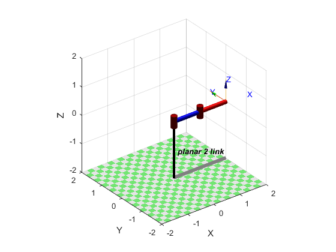
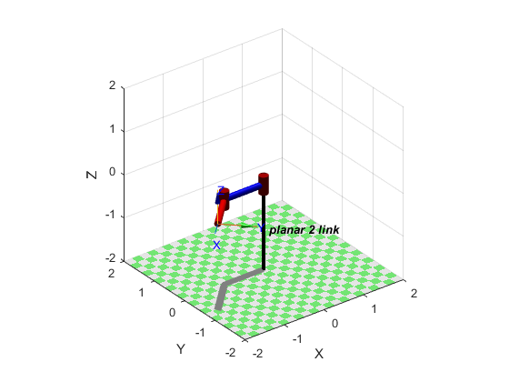

Para este Robô, vamos mostrar o comportamento do mesmo quando aplicada a Cinemática Direta e Inversa, e também vamos mostrar como é que este mecanismo simples consegue criar algumas letras.
Curiosidade:
A imagem que apresentamos é referente a um projeto feito na Universidade de Chiba, Japão, onde os alunos desenvolveram este Robô de duas juntas que é capaz de nos vencer a jogar Air Hockey.
Caso queiram ter mais detalhes, não se privem de ler este artigo.
Como normal, iremos iniciar a aplicação das Cinemáticas (Direta e Inversa), e iremos mostrar a trajetória do Robô do ponto de partida até ao ponto de chegada, que
neste caso será em pi e pi/4.
Vamos começar por criar o Robô, e olhar para o mesmo
mdl_planar2 % Cria o Robô
p2 % Mostra os dados do Robô
p2.plot(qz) % Mostra o Robô na posição inicial

Próximo passo, passará pela obtenção da Cinemática Direta
m1 = p2.fkine([0 0]) % cinemática direta com os ângulos a zero
m2 = p2.fkine([pi pi/4]) % cinemática direta em pi pi/4
p2.plot([pi pi/4]) % Robô em pi pi/4
E também vamos aproveitar o Robô na posição de chegada

Aqui podemos ver o Robô em pi pi/4 que será o ponto de chegada previsto.
E agora vamos para a Cinemática Inversa
m3 = p2.ikine(m1, 'mask', [1 1 0 0 0 0]) % Cinemática inversa
m4 = p2.ikine(m2, 'mask', [1 1 0 0 0 0]) % Cinemática inversa
p2.plot(m3) % Robô em cinemática inversa pi pi/4
E por fim, vamos ver a trajetória que o Robô irá fazer desde do seu ponto inicial (qz) até pi pi/4
tempo = [0:0.1:3] % Definimos um vetor de tempo
q = jtraj(m3, m4, tempo) % Definimos a trajetória
p2.plot(q, 'trail', {'r', "LineWidth", 6}, 'movie', '2DOFatob.mp4') % Animação com a trajetória
Para podermos desenhar letras, iremos necessitar de usar uma fonte denominada de hershey, esta foi criada pelo Dr. Allen V. Hershey
no Laboratório Naval de Armamento em 1967, e permite que um Robô consiga desenhar uma letra.
A Robotics Toolbox já vem equipada com essa fonte, portanto, vamos tirar partido da mesma.
Vamos começar por inciar o Robô, e carregar a fonte hershey
mdl_planar2 %cria o Robô
load hershey %carrega a fonte hershey
Agora vamos avançar para definição da letra e desenhar o caminho pretendido
D = hershey{'S'} % Define a letra que vamos usar
D.stroke % desenho da letra
path = [1*D.stroke; zeros(1, numcols(D.stroke))] % caminho da caneta, cada NaN indica o fim de um segmento
k = find(isnan(path(1, :))) % escala do caminho
path(:, k) = path(:, k-1) % caminho
E vamos definir a trajetória e aplicar a Cinemática Inversa
traj = mstraj(path(:,2:end)', [2 2 2], [], path(:,1)', 0.02, 0.2) % converte a trajetória num movimento continuo
tempo = numrows(traj) * 0.02 % vetor tempo, ou seja, vai levar cerca de 7 segundos a desenhar a letra
Tp = SE3(0, 0, 0) * SE3(traj) * SE3.oa([0 1 0], [0 0 -1]) % Orientação da caneta
q = p2.ikine(Tp, 'mask', [1 1 0 0 0 0]) % Aplicação da Cinemática Inversa
E por fim, vamos desenhar a letra S
plot3(traj(:, 1), traj(:, 2), traj(:, 3)) % faz o plot das coordenadas no espaço a 3 dimensões
grid
p2.plot(q, 'trail', {'y', 'LineWidth', 4}, 'movie', '2DOF_S.mp4') % faz plot do Robô e exporta a animação para um ficheiro de vídeo